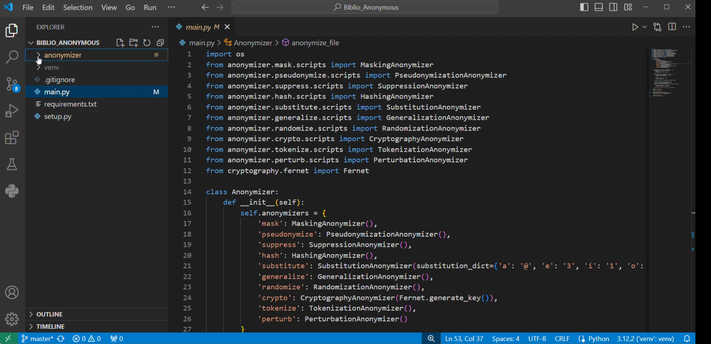

Développement
2024
Bibliothèque Python d’anonymisation de données
Librairie qui anonymise des textes (fichiers .txt, paragraphes, phrases ou mots) grâce à 10 techniques : masquage, pseudonymisation, suppression, hachage, substitution, généralisation, randomisation, chiffrement, perturbation et tokenisation. Objectif : protéger les données personnelles avant analyse.
Voir le code sur GitHub